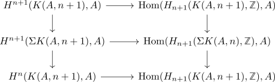
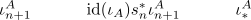
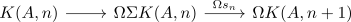

suspension morphism for Eilenberg-MacLane spaces
Proposition
Let $A \in \mathrm{Ab}$ be an abelian group for $n \geq 1$ and $K(A,n)$ the Eilenberg-Maclane space Thne there exists a map
such that under the suspension isomorphism of singular cohomology
corresponds to $\iota_n^A$
Proof
using the absolute Hurewicz theorem, suspension isomorphism of singular homology and homotopy group of the suspended Eilenberg-MacLane space
We can then make $\Sigma(K(A,n))$ an Eilenberg MacLane space by attaching cells and hence get the skeleton inclusion
Here we have also an induced identitification of $\pi_{n+1}(K(A,n+1)') \rightarrow A$ as we may take the inverse of $\pi_{n+1}(s_n)$ (isomorphism of homotopy groups between skeleton and CW complex) and then composing with the given identification above.

The claim states that

consider

This is a weak equivalence if and only if it is an iso on $\pi_n$, because both sides only have a homotopy group in $k = n$
Note that the unit adjunction $1$ is \(2n-1\) freudenthal suspension connected, hence it is an iso for $1 < n$ The second morphism $\Omega s_n$ is a $\pi_n$ isomorphism, because $s_n$ is by construction an iso on $\pi_{n+p}$ (hurewicz)
Hence it suffices to show the case $n = 1$
is a $\pi_1$ iso.
We can construct the map compatibly with filtered colimits in $A$. hence it suffices to show the case of a finitely generated abelian group.
Here both $\pi_1()$ are given by $A$. Furthermore the map $A \rightarrow A$ is surjective by construction, resp. an iso (cf. surjective endomorphism for a noetherian module as isomorphism)